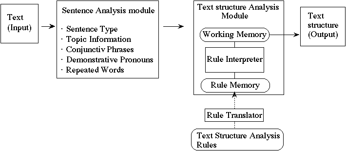

(49) Text Structure Analysis System
Machine: PSI
Environment: SIMPOS
Language: ESP
Source Code: 5.0 MB
Documents: Manual (Japanese)
Overview
This system analyzes the rhetorical structure of Japanese texts.
Configuration

Function
Texts such as editorials are written to show writer's opinion and
thinking to readers. We call such opinion"Writer's Intention". We have
developed a system which analyzes the rhetorical structure of Japanese
texts from the view point of the Writer's Intention. This system makes
use of five kinds of sentence information obtained from the results of
morphological analysis: sentence type which is classified by its
intention, topic information, demonstrative pronouns, conjunctive
phrases and repeated words, and it analyzes a text structure using
about 400 rules. These rules are based on analysis of Japanese context
phenomena and are divided into 4 categories. The first category is for
analysis of the relationship between a sentence and its adjacent one.
The second category generates some groups of sentences using adjacent
sentence relationships. The relationship between these groups will be
analyzed in the third category. The fourth category develops text
structure as the result of recognition of their elements.
FTP
- Text Structure Analysis System [316K]

www-admin@icot.or.jp